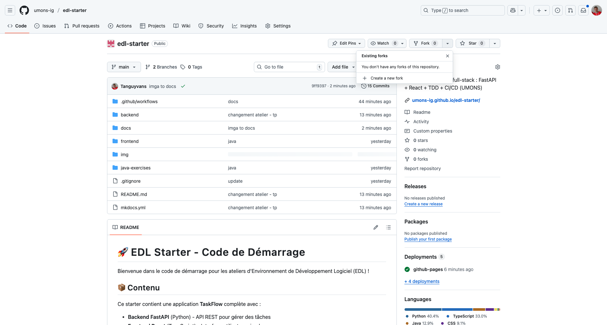
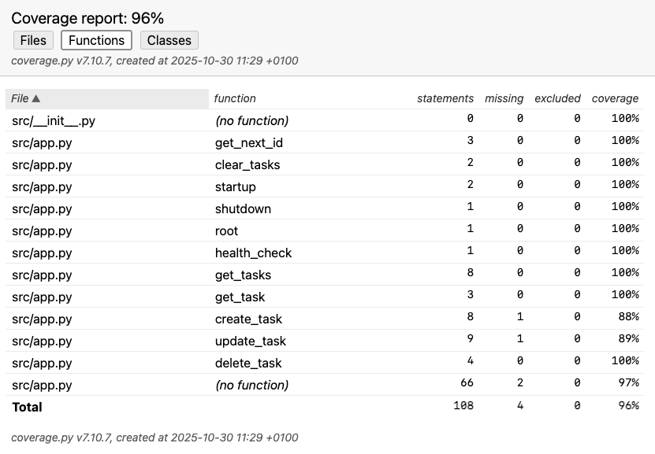
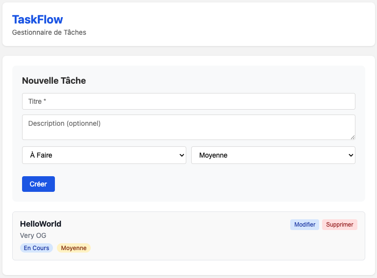

🎓 TP 1 : Tests Unitaires Backend & Frontend¶
Objectif : Apprendre les tests unitaires avec Python (pytest), puis voir que les mêmes principes s'appliquent en JavaScript (Vitest)
Phase 1 : Installation & Configuration¶
Étape 1.1 : Forker le Dépôt¶
- Allez sur
https://github.com/umons-ig/edl-starter - Cliquez sur "Fork"

- Clonez votre fork :
Étape 1.2 : Installer les Dépendances Python (2 Options)¶
Option A : Avec UV (Recommandé - Plus Rapide) ⚡
UV est un gestionnaire de paquets Python moderne et ultra-rapide.
Installation UV :
macOS/Linux :
Windows :
Installer les dépendances :
Option B : Avec pip (Classique) 🐍
Si vous préférez pip ou avez déjà Python installé :
cd backend
python -m venv .venv
source .venv/bin/activate # Windows: .venv\Scripts\activate
pip install -r requirements.txt
Dans le reste de l'atelier :
- Si vous utilisez UV :
uv run pytest - Si vous utilisez pip :
pytest
Phase 2 : Explorer l'Application¶
Étape 2.1 : Lancer le Serveur¶
Étape 2.2 : Tester dans le Navigateur¶
Visitez :
- API : http://localhost:8000
- Documentation interactive : http://localhost:8000/docs
- Santé : http://localhost:8000/health
Étape 2.3 : Tester avec Swagger UI¶
- Allez sur http://localhost:8000/docs
- Cliquez sur POST /tasks
- Cliquez sur "Try it out"
- Entrez :
- Cliquez sur "Execute"
- Vous devriez voir un code
201 Created
Étape 2.4 : Explorer le Code¶
Ouvrez backend/src/app.py dans votre éditeur :
TaskStatus,TaskPriority: les valeurs possibles du statut et de la prioritéTaskCreate,TaskUpdate,Task: les modèles Pydantic (forme des données reçues et renvoyées)tasks_db: le stockage en mémoire (un simple dictionnaire{id: tâche})get_tasks(),get_task(),create_task(): les endpoints déjà écritsupdate_task(),delete_task(): les deux endpoints que vous allez écrire
Important : Ce backend utilise un stockage en mémoire (un simple dictionnaire Python) pour les TP 1 & 2. Vous utiliserez PostgreSQL dans le TP 3.
Phase 3 : Comprendre les Tests¶
Étape 3.1 : Explorer les Fichiers de Test¶
Ouvrez ces fichiers :
backend/tests/conftest.py→ Fixtures de testbackend/tests/test_api.py→ Tests
Étape 3.2 : Qu'est-ce qu'une Fixture ?¶
Dans conftest.py, regardez :
@pytest.fixture(autouse=True)
def clean_tasks():
"""Nettoie les tâches avant et après chaque test"""
clear_tasks()
yield
clear_tasks()
@pytest.fixture
def client():
"""Fournit un client HTTP de test"""
with TestClient(app) as test_client:
yield test_client
Pourquoi c'est utile ?
clean_tasks: Nettoie automatiquement le stockage en mémoire avant chaque testclient: Vous n'avez pas à créer un client dans chaque test- pytest les injecte automatiquement quand vous écrivez
def test_xxx(client):
Étape 3.3 : Lancer les Tests¶
Au départ, beaucoup de tests sont rouges, c'est normal :
tests/test_api.py::test_root_endpoint PASSED
...
tests/test_api.py::test_delete_task FAILED
...
tests/test_api.py::test_filter_by_status_and_priority SKIPPED
...
========== 9 failed, 5 passed, 2 skipped ==========
Les 5 tests verts sont les exemples. Les rouges sont votre travail de la phase 4.
Étape 3.4 : Comprendre un Test¶
Regardez test_create_task dans test_api.py :
def test_create_task(client):
# ARRANGE : Préparer les données
new_task = {
"title": "Acheter des courses",
"description": "Lait, œufs, pain"
}
# ACT : Faire la requête
response = client.post("/tasks", json=new_task)
# ASSERT : Vérifier
assert response.status_code == 201
assert response.json()["title"] == "Acheter des courses"
Pattern Arrange-Act-Assert :
- Arrange → Préparer
- Act → Agir
- Assert → Vérifier
Phase 4 : Écrire les Tests, puis le Code¶
Le fichier backend/tests/test_api.py contient trois groupes de tests :
| Partie | Contenu | Votre travail |
|---|---|---|
| Partie 1 | 5 tests exemples | Les lire |
| Partie 2 | 5 tests vides pour delete_task() et update_task() |
Les écrire, puis écrire les fonctions dans app.py (exercices 1 et 2) |
| Partie 3 | 4 tests vides | Les écrire (exercice 3) |
Chaque test vide contient une ligne pytest.fail(...) qui le fait échouer : supprimez-la, puis écrivez ARRANGE / ACT / ASSERT en vous inspirant des exemples. La docstring de chaque test dit ce qu'il doit vérifier.
Pour les exercices 1 et 2, on suit la logique du TDD (Test-Driven Development) :
- 🔴 Écrire le test : il échoue, car la fonction n'est pas encore écrite.
- 🟢 Écrire le code de la fonction, jusqu'à ce que le test passe.
✍️ Exercice 1 : Supprimer une Tâche (20 min)¶
Étape 1 : écrire les tests. Dans la partie 2 de test_api.py, écrivez test_delete_task et test_delete_nonexistent_task. Ils doivent vérifier :
| Situation | Réponse attendue |
|---|---|
| La tâche existe | Code 204, puis un GET de cette tâche renvoie 404 |
| La tâche n'existe pas | Code 404 |
Les deux tests doivent être rouges : delete_task() renvoie encore une erreur 501.
Étape 2 : écrire delete_task() dans backend/src/app.py, jusqu'à ce que les deux tests passent au vert.
Indice : get_task(), plus haut dans app.py, vérifie déjà si une tâche existe.
✍️ Exercice 2 : Modifier une Tâche (35 min)¶
Étape 1 : écrire les tests. Dans la partie 2, écrivez test_update_task_title, test_update_only_changes_sent_fields et test_update_nonexistent_task :
| Situation | Réponse attendue |
|---|---|
| La tâche n'existe pas | Code 404 |
| On envoie un nouveau titre | Code 200 et la tâche avec le nouveau titre |
On envoie seulement {"status": "done"} |
Le statut change, les autres champs (titre, description, priorité) restent identiques |
Étape 2 : écrire update_task() dans backend/src/app.py. En plus de ce que vérifient vos tests, created_at ne doit pas changer et updated_at doit prendre la date actuelle.
Indices :
create_task()montre comment construire uneTask.updates.model_dump(exclude_unset=True)renvoie un dictionnaire avec uniquement les champs envoyés par le client. Par exemple, si le client envoie{"status": "done"}, vous obtenez{"status": "done"}et pas les autres champs.- Rappel Python :
d.get("title", valeur)renvoied["title"]s'il existe, sinonvaleur.
Vos trois tests doivent passer. test_update_task_with_invalid_priority reste rouge : il fait partie de l'exercice 3.
✍️ Exercice 3 : Tester le Code Existant (30 min)¶
🎯 Objectif : écrire les 4 tests de la partie 3. Ici, le code existe déjà : vos tests vérifient qu'il se comporte correctement, notamment dans les cas d'erreur.
| Test | Ce qu'il doit vérifier |
|---|---|
test_create_task_with_empty_title |
Créer une tâche avec le titre "" est refusé (422) |
test_get_nonexistent_task |
Demander une tâche qui n'existe pas renvoie 404 |
test_update_task_with_invalid_priority |
Modifier une tâche avec priority="urgent" est refusé (422) |
test_filter_tasks_by_status |
GET /tasks?status=done ne renvoie que les tâches terminées |
Les rappels de syntaxe (requêtes, codes HTTP) sont en bas de test_api.py.
💡 Un test qui passe du premier coup est-il un bon test ? Pour le savoir, cassez-le exprès : remplacez par exemple 422 par 200 dans votre assertion. Le test doit devenir rouge. S'il reste vert, il ne vérifie rien ! Remettez ensuite la bonne valeur.
🎁 Bonus : deux tests supplémentaires sont désactivés en bas du fichier (filtre combiné, titre de 200 / 201 caractères). Supprimez la ligne @pytest.mark.skip(...) pour les écrire.
Étape 4.4 : Lancer Tous les Tests¶
Résultat attendu une fois les exercices 1 à 3 terminés :
(16 passed si vous avez fait les bonus.) 🎉
Phase 5 : Couverture de Code¶
Étape 5.1 : Lire la Couverture¶
La couverture s'affiche déjà à la fin de chaque uv run pytest (c'est configuré dans pyproject.toml) :
Name Stmts Miss Cover Missing
-----------------------------------------------
src/app.py ... ... ..% 162, 175, ...
La colonne Missing liste les lignes de app.py qu'aucun test n'a exécutées.

Étape 5.2 : Explorer le Rapport HTML¶
Le rapport HTML est aussi généré à chaque lancement, dans htmlcov/ :
Cliquez sur src/app.py : les lignes en rouge n'ont jamais été exécutées. Choisissez-en une et écrivez un test qui la couvre.
💡 100 % de couverture ne veut pas dire 0 bug : ça veut dire que chaque ligne a été exécutée, pas qu'elle a été vérifiée. C'est pour ça qu'on teste aussi les cas d'erreur (404, 422).
Phase 6 : Tests Frontend¶
Le frontend est écrit en TypeScript (du JavaScript avec des types). Vos tests, eux, sont en JavaScript simple, sans aucun type : ils ressemblent beaucoup à ceux que vous venez d'écrire en Python.
Étape 6.1 : Ce qu'on va tester¶
frontend/src/
├── utils/
│ ├── tasks.ts # Petites fonctions de calcul ← ON TESTE ÇA
│ └── tasks.test.js # Leurs tests (exemples + exercice)
├── api/
│ ├── api.ts # Appels au backend
│ └── api.test.js # Tests déjà écrits (pour aller plus loin)
└── App.tsx # Page principale
Ouvrez frontend/src/utils/tasks.ts. Il contient deux fonctions :
| Fonction | Ce qu'elle fait | Exemple |
|---|---|---|
countByStatus(tasks) |
Compte les tâches de chaque statut | 2 todo + 1 done → { todo: 2, in_progress: 0, done: 1 } |
completionRate(tasks) |
Pourcentage de tâches terminées | 1 done sur 4 → 25 |
Ce sont des fonctions pures : elles reçoivent une liste et renvoient un résultat, sans appeler le backend. Elles servent à afficher le compteur en haut de l'application (« À faire : 2 · En cours : 0 · Terminées : 1 (33 %) »).
Étape 6.2 : Installer et lancer les tests¶
Il faut Node.js 22.12 ou plus récent (vérifiez avec node -v). Sinon, installez la version LTS depuis https://nodejs.org.
npm test reste ouvert et relance les tests à chaque sauvegarde (quittez avec q). Au départ, vous devez voir :
❯ src/utils/tasks.test.js (5 tests | 3 failed)
❯ completionRate (3)
× calcule le pourcentage de tâches terminées
× renvoie 100 quand toutes les tâches sont terminées
× renvoie 0 pour une liste vide
...
FAIL src/utils/tasks.test.js > completionRate > calcule le pourcentage de tâches terminées
Error: Test à écrire (TP 1 - Exercice 4)
...
Tests 3 failed | 7 passed (10)
Les 3 tests rouges sont ceux que vous allez écrire.
Étape 6.3 : Lire un test exemple¶
Ouvrez frontend/src/utils/tasks.test.js :
it('compte les tâches de chaque statut', () => {
// ARRANGE : préparer une liste de tâches
const tasks = [
{ status: 'todo' },
{ status: 'todo' },
{ status: 'done' },
];
// ACT : appeler la fonction à tester
const counts = countByStatus(tasks);
// ASSERT : vérifier le résultat
expect(counts).toEqual({ todo: 2, in_progress: 0, done: 1 });
});
C'est le même pattern Arrange-Act-Assert qu'en Python. Seule la syntaxe change :
| Python (pytest) | JavaScript (Vitest) |
|---|---|
def test_xxx(client): |
it('xxx', () => { ... }); |
x = 3 |
const x = 3; |
assert resultat == 50 |
expect(resultat).toBe(50); |
assert resultat == {"todo": 2} |
expect(resultat).toEqual({ todo: 2 }); |
toBecompare une valeur simple (nombre, texte, booléen).toEqualcompare le contenu d'un objet ou d'un tableau.
✍️ Exercice 4 : Tester completionRate() (15 min)¶
🎯 Objectif : Écrire les 3 tests de completionRate() dans frontend/src/utils/tasks.test.js.
Chaque test contient déjà ses étapes en commentaire et une ligne throw new Error(...) qui le fait échouer. Pour chaque test :
- Supprimez la ligne
throw new Error(...) - Écrivez ARRANGE / ACT / ASSERT en suivant les commentaires
| Test | Données (ARRANGE) | Résultat attendu (ASSERT) |
|---|---|---|
| calcule le pourcentage de tâches terminées | 4 tâches dont 2 'done' |
50 |
| renvoie 100 quand toutes les tâches sont terminées | 2 tâches 'done' |
100 |
| renvoie 0 pour une liste vide | [] |
0 |
Indice : completionRate renvoie un nombre → utilisez toBe.
Vérifier : dans le terminal où tourne npm test, les 3 tests doivent passer au vert :
💡 Le 3e test vérifie un cas limite : sans le if (tasks.length === 0) dans tasks.ts, la fonction diviserait par zéro. Essayez de supprimer ce if : votre test doit échouer. Remettez-le ensuite.
Étape 6.4 : Couverture Frontend¶
tasks.ts doit être couvert à 100 %.
Étape 6.5 : Pour aller plus loin — tester les appels au backend (lecture)¶
api.ts appelle le backend avec fetch(). Pour le tester sans lancer de serveur, api.test.js remplace fetch() par une fausse fonction (un mock) qui renvoie une réponse choisie à l'avance :
const mockFetch = vi.fn().mockResolvedValue({
ok: true,
json: () => Promise.resolve([{ id: 1, title: 'Test Task', status: 'todo' }]),
});
vi.stubGlobal('fetch', mockFetch); // fetch() est maintenant notre fausse fonction
const tasks = await api.getTasks(); // api.ts appelle le faux fetch()
expect(tasks).toHaveLength(1);
On peut aussi vérifier comment le faux fetch() a été appelé (URL, méthode HTTP…). Les 5 tests du fichier sont déjà écrits et commentés : lisez-les, il n'y a rien à compléter.
Étape 6.6 : Lancer l'Application Complète¶
Terminal 1 - Backend :
Terminal 2 - Frontend :
Ouvrir dans le navigateur : http://localhost:3000
Vous devriez voir l'application TaskFlow fonctionner :

🎁 Exercices Bonus : Java avec JUnit¶
Objectif : Voir que les principes de TDD s'appliquent à tous les langages !
Les exercices Java sont dans le dossier java-exercises/.
Prérequis : Installer Java¶
Si pas installé :
- macOS :
brew install openjdk@17 - Linux :
sudo apt install openjdk-17-jdk - Windows : Installer depuis adoptium.net
Commandes de base :
Chaque exercice utilise un Makefile pour simplifier la compilation et l'exécution :
✍️ Bonus Java 1 : Calculs Géométriques (Composition de Fonctions)¶
🎯 Objectif : écrire trois petites méthodes en réutilisant celles déjà écrites.
Dossier : java-exercises/calculs-geo/. Addition.add() est déjà écrite (exemple). Les tests sont fournis.
| Fichier | Méthode | Ce qu'elle calcule | Contrainte |
|---|---|---|---|
Produit.java |
mult(a, b) |
a × b |
— |
Surface.java |
surf(a, b) |
Surface d'un rectangle | Utiliser Produit.mult() |
Perimetre.java |
perim(a, b, c) |
(a + b) × c |
Utiliser Addition.add() et Produit.mult() |
Vérifier :
Au départ, 3 tests sur 4 échouent. Implémentez les méthodes dans l'ordre du tableau : à chaque fois, un test de plus doit passer. À la fin :
✍️ Bonus Java 2 : Money¶
🎯 Objectif : écrire une méthode et deux tests.
Dossier : java-exercises/money/.
Partie 1 — Écrire Money.add(). Règles :
12 EUR + 14 EUR = 26 EUR(nouvelleMoney, même devise)12 EUR + 5 USD→ lève uneException
Le test testAddSameCurrency est fourni : il doit passer.
Indice : pour comparer deux String en Java, utilisez .equals() et pas ==.
Partie 2 — Écrire deux tests dans MoneyTest.java (supprimez fail(...)). La syntaxe JUnit est rappelée dans la section suivante.
| Test | Ce qu'il doit vérifier |
|---|---|
testCurrency |
currency() renvoie la devise donnée au constructeur |
testAddDifferentCurrency |
Additionner 12 EUR et 5 USD lève une Exception |
Vérifier :
Résultat attendu : OK (4 tests).
📚 Comprendre JUnit 4 - Les Bases¶
Structure d'un test JUnit :
import org.junit.Test;
import static org.junit.Assert.*;
public class ExampleTest {
@Test
public void testMethodName() {
// Arrange : Préparer les données
int a = 2;
int b = 3;
// Act : Exécuter la méthode à tester
int result = MyClass.add(a, b);
// Assert : Vérifier le résultat
assertEquals(5, result);
}
}
Annotations JUnit :
@Test: Indique qu'une méthode est un test@Test(expected = Exception.class): Le test passe si l'exception est levée
Méthodes d'assertion principales :
assertEquals(expected, actual); // Vérifie que deux valeurs sont égales
assertTrue(condition); // Vérifie qu'une condition est vraie
assertFalse(condition); // Vérifie qu'une condition est fausse
assertNull(object); // Vérifie qu'un objet est null
assertNotNull(object); // Vérifie qu'un objet n'est pas null
Exemple de test d'exception :